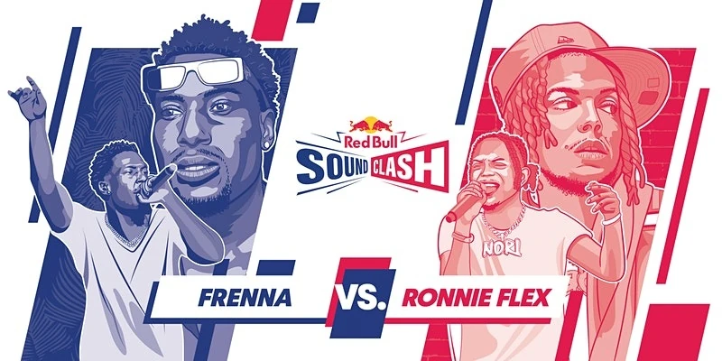

Overige activiteiten
Een helebull vette events!
Op deze pagina zullen een aantal verschillende evenementen staan die Red Bull organiseert die te maken hebben met bijvoorbeeld muziek en sport.
Red Bull Soundclash
Een muzikale battle
Donderdag 6 oktober vond Red Bull Soundclash plaats. Dit was een muzikale battle tussen hiphop artiesten Ronnie Flex en Frenna en dit was te zien en horen in de Gashouder in Amsterdam.
De 'battle' werd afgetrapt met de ronde 'Cover', waarin ze het nummer 'Zij Gelooft In Mij' van André Hazes (sr.) in een ander jasje staken. Een goede opwarmer voor ronde twee, want hierin was het namelijk de bedoeling dat ze een nummer van elkaar moesten overnemen, de 'Take Over'. En damn, toen werden er toch een paar lekkere hitjes gezongen.
Dan op naar ronde drie, want dat was een heel spannende strijd. Tijdens 'The Clash' moesten de zangers twee nummers in een ander jasje steken. Ronnie pakte groots uit en nam zelfs saxofoniste Candy Dulfer mee ter versterking. Het resultaat? Het publiek ging los! Máár ronde vier werd uiteindelijk echt het titanengevecht.
De ronde 'Wild Card' draaide namelijk geheel rondom de gasten die Frenna en Ronnie Flex meenamen. Zo zong Ronnie samen met niemand minder dan Trijntje Oosterhuis (já, echt!) het nummer 'Ik Kan Je Niet Laten Gaan' – kip-pen-vel. Hoe kan Frenna daar nog overheen? Nou, verrassing: hij nam zijn mannen van SFB mee! Dat kon het publiek duidelijk waarderen.
Gelijkspel. Zo was het resultaat van de vier rondes. Dus, moest er nog één keer geluid worden gemaakt voor de favoriete artiest. De uiteindelijke winnaar? Frenna! Al waren de twee na afloop duidelijk nog even goede vrienden 😉
Red Bull Ice Crash
Schaatsen, maar dan voor mensen zonder angst
Regelmatig organiseert Red Bull hele extreme sportevenementen, waarbij zij een bestaande sport pakken en hier hun eigen vleugels aan toevoegen. Ice Crash is hier het perfecte voorbeeld van, deelnemers trekken ijshockey schaatsen aan en skaten een parcours naar beneden waarbij zij te maken hebben met hele steile hellingen, sprongen & scherpe bochten. Deelnemers moeten dus veel ervaring op schaatsen hebben, een gebrek aan angst en toch ook een beetje geluk. Red Bull Ice Crash Junior World Champion Jojo Velasquez legt je alles uit over de sport in de onderstaande video!
Red Bull Rampage
Fietsen voor gevorderden
In de onderstaande video is Brett Rheeder te zien, een wereldkampioen in Red Bull Rampage. Bij deze evenementen leggen deelnemers op een fiets een parcours af met veel sprongen, hoge hoogtes en moeilijke ondergronden. Dit is dus wel een stuk anders dan hoe jij op je Gazelle naar school fietst!